第 1 页
1
\[
〔原稿不清〕 \quad 〔原稿不清〕
\]
第 2 页
理论力学课程
考核标准
最终成绩：
\[
\left\{
\begin{aligned}
& 40\% \text{平时成绩} \left\{
\begin{aligned}
& 25\% \text{课后作业} \\
& 15\% \text{随堂测试}
\end{aligned}
\right. \\
& 60\% \text{期末考试}
\end{aligned}
\right.
\]
课程内容
理论力学分为：
\[
\left\{
\begin{aligned}
& \text{牛顿力学} \sim 40\% \quad (<2 \text{个月}) \\
& \text{分析力学} \sim 60\% \quad (>2 \text{个月})
\end{aligned}
\right.
\]
参考书
$\star$ 理论力学教程，周衍柏（第四版），高等教育出版社
其它参考书：
- 理论力学，刘川，北京大学
- 经典力学，H. Goldstein
- 力学（上、下），梁昆淼（第四版），高等教育出版社
联系方式
邮箱：haitao.li@sdu.edu.cn
地点：知新楼 C912
第 3 页
绪论
理论力学是研究物体机械运动普遍遵循的基本规律的一门学科，是学习其他理论物理学科的入门向导，也是近代工程技术的基础。研究内容为宏观机械运动的基本规律，可以用来解决多自由度力学体系的运动学问题，本课程主要研究有限自由度的力学体系，如质点/刚体。
研究次序
运动学 $\to$ 动力学 $\to$ 静力学，其中：
- 运动学：研究机械运动现象
- 动力学：研究机械运动规律
- 静力学：研究平衡问题
常见的理论力学教课书
$\left\{
\begin{aligned}
动力学 &\to 本课程主要内容
静力学 &\to 工程技术类专业的主要内容
\end{aligned}
\right.$
理论力学/经典力学
$\left\{
\begin{aligned}
&\text{16世纪末（1643--1727）：牛顿力学（矢量力学），牛顿三定律}
&\text{18世纪：分析力学：数学分析的方法，自由度与对称性}
&\text{理论严谨、体系完整的学科，拉格朗日、哈密顿、雅可比等人}
\end{aligned}
\right.$
局限于宏观尺度，速度低。
第 4 页
二
能量变大
尺度变小
经典力学（速度低·宏观） $\rightarrow$ 量子力学（微观）
电动力学（速度低宏观） $\rightarrow$ 狭义相对论（速度快，惯性系）
牛顿引力（质量适中·宏观） $\rightarrow$ 广义相对论（非惯性系，能量/动量密度大）
量子力学（微观） $\rightarrow$ 量子场论
狭义相对论（速度快，惯性系） $\rightarrow$ 量子场论
广义相对论（非惯性系，能量/动量密度大） $\rightarrow$ 量子引力（？）
量子场论 $\rightarrow$ 量子引力（？）
非常好有的有效理论
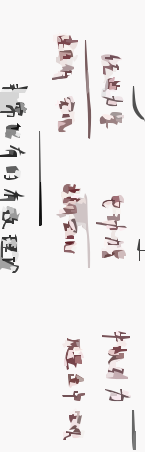
虚线构成的矩形框
第 5 页
第一章 质点力学
1.1 运动的描述方法
1) 参考系与坐标系
为了研究宏观物体的机械运动，首先确定其位置，因位置是相对的，因此应首先找出另一个物体作为参考，这种参考的物体叫做参考系。
坐标系：用以标定物体的空间位置。
质点：忽略物体形状和大小，把研究对象看作具有一定质量点，任何一个简单概念都是近似。
若用直角坐标系，则：
\[
\begin{cases}
x = f_1(t) \\
y = f_2(t) \\
z = f_3(t)
\end{cases}
\]
位置矢量 $\vec{r} = x\vec{i} + y\vec{j} + z\vec{k}$，其大小为
\[
|\vec{r}| = \sqrt{x^2 + y^2 + z^2} = \sqrt{\vec{r} \cdot \vec{r}}
\]
若在平面内运动，可选择 $xy$ 平面，此时运动方程为
\[
\begin{cases}
x = f_1(t) \\
y = f_2(t)
\end{cases}
\]
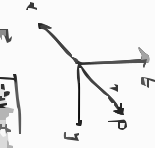
直角坐标系示意图，包含x、y、z轴，位置矢量r和点P
第 6 页
1.2 速度、加速度的分量表达式
直角坐标系
\[
\vec{r} = x\vec{i} + y\vec{j} + z\vec{k}, \quad \vec{v} = \dot{x}\vec{i} + \dot{y}\vec{j} + \dot{z}\vec{k}, \quad \vec{a} = \ddot{x}\vec{i} + \ddot{y}\vec{j} + \ddot{z}\vec{k}
\]
运动学的两类问题 交互演示
(1) 已知运动方程，求质点任意时刻的位置、速度以及加速度：$\vec{r} = \vec{r}(t)$，求 $\vec{v} = \frac{d\vec{r}}{dt}$，$\vec{a} = \frac{d\vec{v}}{dt}$
(2) 已知质点运动的速度或加速度，以及初始条件，求质点的运动方程、轨道方程：
\[
\frac{d\vec{v}}{dt} = \vec{a}, \quad \int_{\vec{v}_0}^{\vec{v}} d\vec{v} = \int_{t_0}^t \vec{a} dt
\]
\[
\frac{d\vec{r}}{dt} = \vec{v}, \quad \int_{\vec{r}_0}^{\vec{r}} d\vec{r} = \int_{t_0}^t \vec{v} dt
\]
第 7 页
2. 运动方程与轨道 交互演示
\[
\vec{r} = \vec{r}(t) = x(t)\vec{i} + y(t)\vec{j} + z(t)\vec{k}
\]
轨道方程：$F(x,y,z)=0$
3. 位移、速度和加速度
t时在B，$t+\Delta t$时在A，位移
\[
\Delta\vec{r} = \vec{r}_B - \vec{r}_A
\]
速度（瞬时）
\[
\vec{v} = \lim_{\Delta t \to 0} \frac{\Delta\vec{r}}{\Delta t} = \frac{d\vec{r}}{dt} \quad [\text{m/s}]
\]
\[
\vec{v} = v_x\vec{i} + v_y\vec{j} + v_z\vec{k} = \dot{x}\vec{i} + \dot{y}\vec{j} + \dot{z}\vec{k}
\]
速率
\[
|\vec{v}| = \lim_{\Delta t \to 0} \frac{\Delta s}{\Delta t} = \frac{ds}{dt} = \sqrt{\dot{x}^2 + \dot{y}^2 + \dot{z}^2} = \sqrt{\vec{v} \cdot \vec{v}}
\]
加速度
\[
\vec{a} = \frac{d\vec{v}}{dt} = \frac{dv_x}{dt}\vec{i} + \frac{dv_y}{dt}\vec{j} + \frac{dv_z}{dt}\vec{k} = \ddot{x}\vec{i} + \ddot{y}\vec{j} + \ddot{z}\vec{k}
\]
\[
a = |\vec{a}| = \sqrt{a_x^2 + a_y^2 + a_z^2}
\]
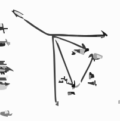
位移矢量示意图，包含位置矢量r\_A、r\_B和位移$\Delta$r以及坐标系
第 8 页
例1
路灯距地面高度为$h$，身高为$l$的人以速度$v_0$在路上匀速行走。求：(1)人影头部的移动速度；(2)影长增长的速率。
(1) 人影头部的移动速度
由几何关系得：
\[
\frac{x_2 - x_1}{l} = \frac{x_2}{h}
\]
整理得：
\[
(x_2 - x_1)h = x_2 l
\]
上式对时间求导：
\[
(h - l)\frac{dx_2}{dt} = h \frac{dx_1}{dt}
\]
其中$\frac{dx_1}{dt} = v_0$，$\frac{dx_2}{dt} = v$，代入得：
\[
v = \frac{h}{h - l}v_0
\]
(2) 影长增长的速率
设影长$b = x_2 - x_1$，则：
\[
v' = \frac{db}{dt} = \frac{dx_2}{dt} - \frac{dx_1}{dt}
\]
代入得：
\[
v' = v - v_0 = \frac{l}{h - l}v_0
\]
例2
设椭圆规尺$AB$的端点$A$和$B$沿直线导槽$Ox$及$Oy$滑动，而$B$以匀速$c$运动。求尺规上$M$点的轨道方程，速度及加速度。其中$MA = a$，$MB = b$，角$OBA$为$\theta$。
由图可知$M$点的坐标为：
\[
x = b\sin\theta, \quad y = a\cos\theta
\]
消去$\theta$依赖，可得轨迹方程：
\[
\frac{x^2}{b^2} + \frac{y^2}{a^2} = 1
\]
$M$点的速度为：
\[
v_x = \dot{x} = b\cos\theta \dot{\theta}, \quad v_y = \dot{y} = -a\sin\theta \dot{\theta}
\]
由图可知$B$点的坐标为：
\[
x_B = 0, \quad y_B = (a + b)\cos\theta
\]
$B$点的速度只能沿$y$轴向下，故：
\[
v_B = \dot{y}_B = -(a + b)\sin\theta \dot{\theta} = -c
\]
得：
\[
\dot{\theta} = \frac{c}{(a + b)\sin\theta}
\]
故$M$点的速度为：
\[
\dot{x} = \frac{bc}{a + b}\cot\theta, \quad \dot{y} = -\frac{ac}{a + b}
\]
故$M$点的加速度为：
\[
\ddot{x} = -\frac{bc}{a + b}\dot{\theta}\csc^2\theta = -\frac{bc^2}{(a + b)^2}\csc^3\theta = -\frac{b^4 c^2}{(a + b)^2 x^3}
\]
路灯人影问题的几何示意图，包含路灯、行人、地面坐标轴及长度标注
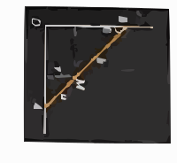
椭圆规机构的几何示意图，端点A沿y轴、B沿x轴滑动，M为规上点，标注长度a、b、角度$\theta$
椭圆规机构的几何示意图，标注M点坐标x、y，角度$\theta$，端点A、B及长度a、b
第 9 页
2
极坐标
平面运动，极坐标系，空间$P$的位置$(r, \theta)$
\[
\vec{r} = r \vec{i}
\]
\[
\vec{v} = \frac{d\vec{r}}{dt} = \frac{dr}{dt} \vec{i} + r \frac{d\vec{i}}{dt}
\]
当$dt \to 0$时，$d\theta \to 0$，$\vec{i} \to \vec{i}'$，$\Delta \vec{i} = \vec{i}' - \vec{i}$，$\Delta \vec{j} = \vec{j}' - \vec{j}$，且$d\vec{i} \perp \vec{i}$，$d\vec{j} \perp \vec{j}$，$|d\vec{i}| = |d\vec{j}| = d\theta$，所以：
\[
\frac{d\vec{j}}{dt} = \frac{d\vec{j}}{d\theta} \frac{d\theta}{dt} = -\dot{\theta} \vec{i}
\]
\[
\frac{d\vec{i}}{dt} = \frac{d\vec{i}}{d\theta} \frac{d\theta}{dt} = \dot{\theta} \vec{j}
\]
因此速度：
\[
\vec{v} = \frac{dr}{dt} \vec{i} + r \dot{\theta} \vec{j}
\]
径向 横向
加速度：
\[
\vec{a} = \frac{d\vec{v}}{dt} = \frac{d}{dt}(\dot{r} \vec{i}) + \frac{d}{dt}(r \dot{\theta} \vec{j})
\]
展开计算：
\[
\frac{d}{dt}(\dot{r} \vec{i}) = \frac{d\dot{r}}{dt} \vec{i} + \dot{r} \frac{d\vec{i}}{dt} = \ddot{r} \vec{i} + \dot{r} \dot{\theta} \vec{j}
\]
\[
\frac{d}{dt}(r \dot{\theta} \vec{j}) = \frac{dr}{dt} \dot{\theta} \vec{j} + r \frac{d\dot{\theta}}{dt} \vec{j} + r \dot{\theta} \frac{d\vec{j}}{dt} = \dot{r} \dot{\theta} \vec{j} + r \ddot{\theta} \vec{j} - r \dot{\theta}^2 \vec{i}
\]
合并得：
\[
\vec{a} = (\ddot{r} - r \dot{\theta}^2) \vec{i} + (r \ddot{\theta} + 2 \dot{r} \dot{\theta}) \vec{j}
\]
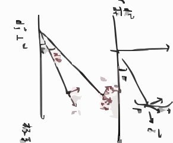
极坐标平面运动的位置矢量与单位矢量示意图
第 10 页
所以 $\vec{a} = (\ddot{r} - r\dot{\theta}^2)\vec{i} + (2\dot{r}\dot{\theta} + r\ddot{\theta})\vec{j}$
\[
\vec{a} = (\ddot{r} - r\dot{\theta}^2)\vec{e}_r + \frac{1}{r}\frac{d}{dt}(r^2\dot{\theta})\vec{e}_\theta
\]
其中$\vec{e}_r$为径向，$\vec{e}_\theta$为横向。
3、自然坐标系
在质点运动轨迹上，取$O$为原点，用从$O$到$P$的路程$s$标记点$P$，$\Delta s = s_Q - s_P$，自然坐标系的单位矢量为切向$\vec{e}_t$和法向$\vec{e}_n$，$\vec{e}_n$指向轨迹凹侧。
速度：
速度 $\vec{v} = \frac{d\vec{r}}{dt} = \frac{ds}{dt}\vec{e}_t$，$|\vec{dr}| = ds$，故速率 $v = \frac{ds}{dt}$。
加速度：
\[
\vec{a} = \frac{d\vec{v}}{dt} = \frac{d\vec{v}_t}{dt} + \frac{d\vec{v}_n}{dt} = \vec{a}_t + \vec{a}_n
\]
切向加速度：
\[
\vec{a}_t = \frac{dv}{dt}\vec{e}_t = \frac{d^2s}{dt^2}\vec{e}_t
\]
法向加速度推导：
\[
\frac{d\vec{v}_n}{dt} = v\frac{d\vec{v}_n}{ds} = v\dot{\theta}\vec{e}_n = v\frac{d\theta}{dt}\vec{e}_n = v\frac{d\theta}{ds}\frac{ds}{dt}\vec{e}_n = \frac{v^2}{\rho}\vec{e}_n
\]
质点运动轨迹及自然坐标系的切向、法向单位矢量示意图
第 11 页
曲线曲率计算
\[
\rho = \frac{ds}{d\theta}
\]
其中
\[
ds = \sqrt{(dx)^2 + (dy)^2} = dx\sqrt{1 + (y')^2}, \quad y' = \frac{dy}{dx} = \tan\theta
\]
\[
\rho = \frac{ds}{d\theta} = \frac{ds}{dx} \cdot \frac{dx}{d\theta} = \frac{ds}{dx} \cdot \frac{1}{\frac{d\theta}{dy'}} \cdot \frac{dy'}{d\theta} = \frac{\sqrt{1 + (y')^2}}{y''} \cdot \frac{d\tan\theta}{d\theta}
\]
\[
\frac{d\tan\theta}{d\theta} = \frac{d}{d\theta} \left( \frac{\sin\theta}{\cos\theta} \right) = \frac{1}{\cos^2\theta} = 1 + \tan^2\theta = 1 + (y')^2
\]
\[
\rho = \frac{\sqrt{1 + (y')^2}}{y''} \cdot (1 + (y')^2) = \frac{(1 + (y')^2)^{3/2}}{y''}
\]
曲率半径
\[
\rho = \frac{(1 + (y')^2)^{3/2}}{y''}
\]
直角坐标系中带切线和角度$\theta$的曲线示意图
第 12 页
4) 球坐标系
坐标变换关系：
\[
\begin{cases}
x = r \sin\theta \cos\varphi \\
y = r \sin\theta \sin\varphi \\
z = r \cos\theta
\end{cases}
\]
位置矢量为：\(\vec{r} = x \vec{i} + y \vec{j} + z \vec{k}\)
单位矢量定义：
- \(\vec{e}_r\)：沿\(\overrightarrow{OM}\)方向；
- \(\vec{e}_\theta\)：在\(x\text{-}y\)平面的投影沿\(\overrightarrow{OM}\)的垂直方向；
- \(\vec{e}_\varphi\)：在\(x\text{-}y\)平面内垂直于\(\overrightarrow{OM}\)的方向；
单位矢量的分量形式：
\[
\vec{e}_r = \sin\theta \cos\varphi \vec{i} + \sin\theta \sin\varphi \vec{j} + \cos\theta \vec{k}, \quad
\vec{e}_\theta = \cos\theta \cos\varphi \vec{i} + \cos\theta \sin\varphi \vec{j} - \sin\theta \vec{k}, \quad
\vec{e}_\varphi = -\sin\varphi \vec{i} + \cos\varphi \vec{j}
\]
在球坐标系下表示\(\vec{r}\)，速度推导如下：
\[
\vec{v} = \frac{d\vec{r}}{dt} = \dot{x} \vec{i} + \dot{y} \vec{j} + \dot{z} \vec{k}
\]
将\(\vec{r} = r \vec{e}_r\)代入，得：
\[
\vec{v} = \frac{d}{dt}(r \vec{e}_r) = \dot{r} \vec{e}_r + r \frac{d\vec{e}_r}{dt}
\]
计算单位矢量的时间导数：
\[
\frac{d\vec{e}_r}{dt} = \dot{\theta} \vec{e}_\theta + \dot{\varphi} \sin\theta \vec{e}_\varphi, \quad
\frac{d\vec{e}_\theta}{dt} = -\dot{\theta} \vec{e}_r + \dot{\varphi} \cos\theta \vec{e}_\varphi, \quad
\frac{d\vec{e}_\varphi}{dt} = -\dot{\varphi} \cos\varphi \vec{i} - \dot{\varphi} \sin\varphi \vec{j}
\]
代入速度表达式，整理得球坐标系下的速度：
\[
\vec{v} = \dot{r} \vec{e}_r + r \dot{\theta} \vec{e}_\theta + r \dot{\varphi} \sin\theta \vec{e}_\varphi
\]
加速度推导：
\[
\vec{a} = \frac{d\vec{v}}{dt}
\]
展开计算后，球坐标系下的加速度为：
\[
\vec{a} = \left( \ddot{r} - r \dot{\theta}^2 - r \dot{\varphi}^2 \sin^2\theta \right) \vec{e}_r + \left( r \ddot{\theta} + 2 \dot{r} \dot{\theta} - r \dot{\varphi}^2 \sin\theta \cos\theta \right) \vec{e}_\theta + \left( r \ddot{\varphi} \sin\theta + 2 \dot{r} \dot{\varphi} \sin\theta + 2 r \dot{\theta} \dot{\varphi} \cos\theta \right) \vec{e}_\varphi
\]
球坐标系几何示意图，包含原点O、坐标轴x/y、位置矢量r、点P及相关单位向量和角度标注
第 13 页
1.3 平动参考系
不同参考系之间的关系：
\[
\vec{r} = \vec{r}_0 + \vec{r}'
\]
其中，参考系$A$的坐标原点在参考系$B$中的位置为$\vec{r}_0$，$\vec{r}$是质点在参考系$A$中的位置，$\vec{r}'$是质点在参考系$B$中的位置。
速度关系：
\[
\frac{d\vec{r}}{dt} = \frac{d\vec{r}_0}{dt} + \frac{d\vec{r}'}{dt} \quad \text{即} \quad \vec{v} = \vec{u} + \vec{v}'
\]
同理，加速度关系：
\[
\frac{d\vec{v}}{dt} = \frac{d\vec{u}}{dt} + \frac{d\vec{v}'}{dt} \quad \text{即} \quad \vec{a} = \vec{a}_0 + \vec{a}'
\]
例2
小船$M$看作质点，被水冲走，用绳拉回$A$点，设水流速度为$\vec{v}_1$，拉回速度为$\vec{v}_2$，求小船的轨迹。
解：采用极坐标。
径向速度：
\[
\frac{dr}{dt} = -v_2
\]
横向速度：
\[
r \frac{d\varphi}{dt} = -v_1 \cos\left(\frac{\pi}{2} - \varphi\right) = -v_1 \sin\varphi
\]
轨迹微分方程：
\[
\frac{dr}{r d\varphi} = \frac{dr}{dt} \cdot \frac{dt}{d\varphi} = \frac{v_2}{v_1} \cdot \frac{1}{\sin\varphi}
\]
整理得：
\[
\frac{1}{r} dr = \frac{v_2}{v_1} \cdot \frac{d\varphi}{\sin\varphi}
\]
积分得：
\[
\ln r - \ln r_0 = \frac{v_2}{v_1} \left( \ln \tan \frac{\varphi}{2} - \ln \tan \frac{\varphi_0}{2} \right)
\]
即：
\[
\ln \frac{r}{r_0} = \frac{v_2}{v_1} \ln \frac{\tan \frac{\varphi}{2}}{\tan \frac{\varphi_0}{2}}
\]
\[
r = r_0 \left( \frac{\tan \frac{\varphi}{2}}{\tan \frac{\varphi_0}{2}} \right)^{\frac{v_2}{v_1}}
\]
第 14 页
1.4 质点运动规律
牛顿第一定律
任何物体如果没有受到其他物体的作用时，都将保持静止状态或匀速直线运动状态。不仅说明物体有惯性，还定义了惯性。
牛顿第二定律
物体的加速度与外力成正比，与质量成反比。
\[
\vec{F} = \frac{d\vec{p}}{dt}
\]
其中 $\vec{p} = m\vec{v}$，
\[
\vec{F} = m\vec{a}
\]
牛顿第三定律
作用力与反作用力关系为：
\[
\vec{F}_{ab} = -\vec{F}_{ba}
\]
力学相对性原理和伽利略变换
(1) 力学相对性原理
力学定律的数学形式在一切惯性系中不变，牛顿定律成立的条件在惯性系中
(2) 牛顿的绝对时空观
长度和时间的度量与参考系无关
右侧标注：纵轴 $r/r_0$，横轴 $\varphi$，曲线参数：$v_2/v_1=1$，$v_2/v_1=2$，$v_2/v_1=3$，$\varphi_0 = 2\pi/3$
第 15 页
伽利略变换
在两个参考系中，考察同一物理事件的位置$P$。
参考系$S$：$\vec{r}=(x,y,z,t)$
参考系$S'$：$\vec{r}'=(x',y',z',t')$
当$t=t'=0$时，坐标原点重合。
\[
\left\{
\begin{aligned}
x' &= x - vt \\
y' &= y \\
z' &= z \\
t' &= t
\end{aligned}
\right.
\implies
\left\{
\begin{aligned}
x &= x' + vt \\
y &= y' \\
z &= z' \\
t &= t'
\end{aligned}
\right.
\]
$\vec{v}' = \vec{v} - \vec{V}$，加速度$\vec{a}' = \vec{a}$，因$\frac{d\vec{v}_0}{dt}=0$，即$\vec{F}=m\vec{a}=m\vec{a}'$。
1.5
质点运动微分方程
动力学问题：已知系统的运动，求作用在系统上的力；已知作用在系统上的力，求系统的运动。
1.
自由质点：
\[
m\frac{d^2\vec{r}}{dt^2} = \vec{F}
\]
即
\[
\left\{
\begin{aligned}
m\ddot{x} &= F_x \\
m\ddot{y} &= F_y \\
m\ddot{z} &= F_z
\end{aligned}
\right.
\]
平面坐标系：
\[
\left\{
\begin{aligned}
m(\ddot{r} - r\dot{\theta}^2) &= F_r \\
m(r\ddot{\theta} + 2\dot{r}\dot{\theta}) &= F_\theta
\end{aligned}
\right.
\]
$F_{r/\theta}(r,\theta,\dot{r},\dot{\theta},t)$，$F_i(x,y,z,\dot{x},\dot{y},\dot{z})$
(1) 分析力。
(2) 写坐标量方程。
(3) 确定边界条件。
(4) 解方程。
伽利略变换中两个参考系S和S'的位置矢量示意图，标注了位置矢量r、相对速度vt和物理事件点P
第 16 页
例1
力仅是时间的函数：自由电子在沿$x$轴的振荡电场中运动
\[
E_x = E_0 \cos(\omega t + \theta)
\]
电子受力：$F_x = -e E_x = -e E_0 \cos(\omega t + \theta)$
解
\[
m \ddot{x} = F_x = -e E_0 \cos(\omega t + \theta)
\]
\[
m \frac{dV}{dt} = -e E_0 \cos(\omega t + \theta)
\]
积分可得
\[
V = V_0 + \frac{e E_0}{m \omega} \sin\theta - \frac{e E_0}{m \omega} \sin(\omega t + \theta)
\]
由 $\frac{dx}{dt} = V$，代入可得
\[
x = x_0 - \frac{e E_0}{m \omega^2} \cos\theta + \left(V_0 + \frac{e E_0}{m \omega} \sin\theta\right) t + \frac{e E_0}{m \omega^2} \cos(\omega t + \theta)
\]
例2
原子在晶体点阵中的运动
\[
\vec{F}(x,y,z) = -k_x x \vec{i} - k_y y \vec{j} - k_z z \vec{k}
\]
解
运动方程
\[
m \ddot{\vec{r}} = \vec{F}(x,y,z)
\]
即
\[
\begin{cases}
m \ddot{x} = -k_x x \\
m \ddot{y} = -k_y y \\
m \ddot{z} = -k_z z
\end{cases}
\]
令
\[
\omega_x^2 = \frac{k_x}{m}, \quad \omega_y^2 = \frac{k_y}{m}, \quad \omega_z^2 = \frac{k_z}{m}
\]
$t=0$时，初始条件为
\[
\begin{cases}
x=0, \quad \dot{x} = A_x \omega_x \\
y=0, \quad \dot{y} = A_y \omega_y \\
z=0, \quad \dot{z} = A_z \omega_z
\end{cases}
\]
可得
\[
\begin{cases}
x = A_x \cos(\omega_x t + \theta_x) \\
y = A_y \cos(\omega_y t + \theta_y) \\
z = A_z \cos(\omega_z t + \theta_z)
\end{cases}
\]
待定系数
第 17 页
例
质量为$m$的质点，在有阻力的空气中无初速度地自距地面为$h$的地方竖直下落，若阻力与速度成正比，试求其运动。
解
受力：重力$m\vec{g}$，阻力$\vec{R}$，建立一维坐标系，取向上为$x$轴正方向，原点在地面。
运动方程：
\[
m\ddot{x} = -mg + R
\]
阻力与速度成正比，方向与速度相反，故$\vec{R}=-mk\dot{x}\vec{i}$，代入得：
\[
m\ddot{x} = -mg - mk\dot{x}
\]
整理为：
\[
\ddot{x} = -g - k\dot{x} \implies \frac{d\dot{x}}{dt} = -g -k\dot{x} \implies \frac{d\dot{x}}{g + k\dot{x}} = -dt
\]
方程两边积分：
\[
\int \frac{d\dot{x}}{g + k\dot{x}} = \int -dt
\]
计算积分得：
\[
\frac{1}{k}\ln\left(\frac{g + k\dot{x}}{g}\right) = -t
\]
化简得：
\[
\ln\left(\frac{g + k\dot{x}}{g}\right) = -kt
\]
解得速度：
\[
\dot{x} = -\frac{g}{k}(1 - e^{-kt})
\]
由$\dot{x}=\frac{dx}{dt}$，得位移微分：
\[
dx = -\frac{g}{k}(1 - e^{-kt})dt
\]
积分得位置：
\[
x = h + \frac{g}{k^2}(1 - e^{-kt}) - \frac{g}{k}t
\]
当$t\to\infty$时，$e^{-kt}\to0$，此时$\dot{x}\to -\frac{g}{k}$，质点做匀速直线运动，位置近似为：
\[
x \sim h + \frac{g}{k^2} - \frac{g}{k}t
\]
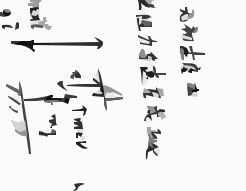
质点竖直下落的受力示意图，包含地面、质点、重力mg、阻力mkv及相关标注
第 18 页
2. 非自由质点
去掉约束，用约束力代替
\[ m \ddot{\vec{r}} = \vec{F}\left( \vec{r}, \frac{d\vec{r}}{dt}, t \right) + \vec{R} \]
解方程
往往约束力并不预先知道，可由约束方程和运动情况确定
1) 光滑约束
比如自然坐标系
\[
\begin{cases}
m \frac{dv}{dt} = F_t \\
m \frac{v^2}{\rho} = F_n + R_n \\
0 = F_b + R_b
\end{cases}
\]
切向、法向、平面外作用力，求运动规律，解出约束力
2) 非光滑约束
\[
\begin{cases}
m \frac{dv}{dt} = F_t + R_t \\
m \frac{v^2}{\rho} = F_n + R_n \\
0 = F_b + R_b
\end{cases}
\]
其中 \( R_t = \mu R_N = \mu \sqrt{R_n^2 + R_b^2} \)，三个未知量为 \( R_t, R_b, R_n, v \)
第 19 页
例
小环质量为$m$，套在一条光滑的钢索上，钢索形状为$x^2=4ay$，求环自$x=2a$处自由滑到抛物线顶点时的速度及小环的约束力。
解
小环受力为$\vec{mg}$和约束力$\vec{R}$，在自然单位制下，动力学方程为：
\[
\begin{cases}
m \frac{dv}{dt} = mg \sin\theta \\
m \frac{v^2}{\rho} = -mg \cos\theta + R
\end{cases}
\]
又弧长微分关系 $ds = -dy/\sin\theta$，故
\[
\frac{dv}{dt} = \frac{dv}{ds}\frac{ds}{dy}\frac{dy}{dt} = -v \frac{dv}{dy} \sin\theta
\]
代入第一个动力学方程，得
\[
mv \frac{dv}{dy} = -mg
\]
积分，初始条件：$x=2a$时$y=a$，顶点处$y=0$，积分得
\[
\frac{1}{2}mv^2 = mg(a - y)
\]
当$y=0$时，速度满足 $\frac{1}{2}mv^2 = mga$，故 $v = \sqrt{2ga}$。
抛物线方程为 $y = \frac{x^2}{4a}$，求导得 $y' = \frac{x}{2a}$，$y'' = \frac{1}{2a}$，曲率半径公式为
\[
\rho = \frac{[1+(y')^2]^{3/2}}{|y''|}
\]
在顶点$x=0$处，$y'=0$，故 $\rho = \frac{1}{1/(2a)} = 2a$。此时切线斜率 $\tan\theta = \frac{dy}{dx} = \frac{2x}{4a} = 0$，即 $\theta=0$。代入第二个动力学方程：
\[
m \frac{v^2}{\rho} = -mg \cos0 + R
\]
代入$v^2=2ga$，$\rho=2a$，得
\[
m \frac{2ga}{2a} = -mg + R \implies mg = -mg + R \implies R=2mg
\]
抛物线钢索与小环受力分析示意图，含抛物线曲线、小环、重力mg、约束力R及角度标注
第 20 页
第一章 数学基础：线性微分方程
(1)
\[
\frac{dx}{dt} = a x \implies \frac{dx}{x} = a dt \implies d\ln x = a dt \implies x = A e^{a t}
\]
或者：将 $x = A e^{a t}$ 代入 $\frac{dx}{dt} = a x$，得 $a = a$。
(2)
对于方程 $\frac{d^2 x}{dt^2} = a x$，分离变量：
\[
\frac{d^2 x}{dt^2} = \frac{dv}{dt} = \frac{dv}{dx} \cdot \frac{dx}{dt}
\]
因此 $\frac{dv}{dx} = a x$，积分得：
\[
\int \frac{1}{2} d v^2 = \int \frac{a}{2} d x^2 \implies \frac{1}{2}(v^2 - v_0^2) = \frac{a}{2}(x^2 - x_0^2)
\]
整理得：
\[
v = \sqrt{a(x^2 - x_0^2) + v_0^2}
\]
又 $v = \frac{dx}{dt}$，故：
\[
\int_{x_0}^{x(t)} \frac{dx}{v(x)} = \int_{t_0}^t dt' \implies \int \frac{dx}{\sqrt{A + B x^2}} = t - t_0
\]
解得：
\[
x = A e^{\sqrt{a} t} + B e^{-\sqrt{a} t}
\]
另外，设 $\ddot{x} = a x$，令解为 $x = A e^{\alpha t} + B e^{-\alpha t}$，代入方程得 $\ddot{x} = \alpha^2 x = a x$，故 $\alpha^2 = a$，即 $\alpha = \sqrt{a}$。因此解可写为：
\[
x = A e^{\sqrt{a} t} + B e^{-\sqrt{a} t} = \tilde{A} \cosh\left(\sqrt{a} t + \theta_0\right)
\]
若 $a < 0$，则解为：
\[
x = A e^{i \sqrt{-a} t} + B e^{-i \sqrt{-a} t} = \tilde{A} \cos\left(\sqrt{-a} t + \theta_0\right)
\]
(3)
对于方程 $\frac{d^2 x}{dt^2} = a x + b$，其中 $b$ 与时间 $t$ 无关，其解为：
\[
x = A e^{a t} + B e^{-a t} + C
\]
代入微分方程，得 $0 = a C + b$，解得 $C = -\frac{b}{a}$，因此最终解为：
\[
x = A e^{a t} + B e^{-a t} - \frac{b}{a}
\]
第 21 页
4
微分方程 $\ddot{x} + 2\gamma \dot{x} + a x = 0$，齐次。设 $x = A e^{\beta t}$，代入方程得
\[
\beta^2 + 2\gamma \beta + a = 0 \implies \beta = -\gamma \pm \sqrt{\gamma^2 - a}
\]
因此
\[
x = e^{-\gamma t} \left[ A e^{t \sqrt{\gamma^2 - a}} + B e^{-t \sqrt{\gamma^2 - a}} \right]
\]
例题
如图所示，质点 $m$ 固定在弹簧上，质点受阻为 $F_f = -b v$，弹簧弹性系数为 $k$，求运动方程。分析受力为 $F = -b \dot{x} - k x$，运动方程为
\[
m \ddot{x} + b \dot{x} + k x = 0
\]
设 $x = A e^{\lambda t}$，则 $\ddot{x} = \lambda^2 x$，$\dot{x} = \lambda x$，代入得动力学方程
\[
m \lambda^2 + b \lambda + k = 0
\]
若 $\frac{b^2}{4 m^2} - \frac{k}{m} < 0$，令 $\omega^2 = \frac{k}{m} - \frac{b^2}{4 m^2}$，则解为
\[
x = e^{-\frac{b}{2m} t} \left( A e^{i \omega t} + B e^{-i \omega t} \right)
\]
若给此质点一个周期力 $C e^{i \omega_0 t}$，求解运动方程。动力学方程为
\[
m \ddot{x} + b \dot{x} + k x = C e^{i \omega_0 t}
\]
设 $x(t) = A e^{i \omega_0 t}$，代入微分方程得
\[
A e^{i \omega_0 t} \left( -m \omega_0^2 + i b \omega_0 + k \right) = C e^{i \omega_0 t}
\]
因此
\[
A = \frac{C}{-m \omega_0^2 + i b \omega_0 + k}
\]
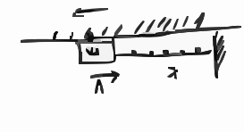
弹簧-质量-阻尼系统的受力示意图，包含质量块m、弹簧k、阻尼力Ff和速度v
第 22 页
21
\[ X(t) = \frac{C_0}{-m\omega_0^2 + i\omega_0 b + k} e^{i\omega_0 t} \]
$X(t)$ 是唯一确定，与初始条件无关？？ No
我们依旧需要通解：
\[ X(t) = A e^{\omega t} + \frac{C}{-m\omega^2 + i\omega_0 b + k} e^{i\omega_0 t} \]
将 $m\ddot{x} + b\dot{x} + kx = C e^{i\omega_0 t}$ 代入，得：
\[ m\omega^2 A e^{\omega t} + A b \omega e^{\omega t} + k A e^{\omega t} + (C_0 \text{ part}) = 0 \]
由特征方程 $m\omega^2 + b\omega + k = 0$，因此通解为：
\[ X(t) = A e^{-\frac{b}{2m} t} \left[ A e^{i\omega t} + B e^{-i\omega t} \right] + \frac{C_0}{-m\omega_0^2 + i\omega_0 b + k} e^{i\omega_0 t} \]
暗示着，分波法，不同频率的振动相叠加。
第 23 页
1.6 非惯性系
$\vec{r} = \vec{r}_0 + \vec{r}' \quad \to \text{非惯性系} \quad \to \text{惯性系}$
$\vec{v} = \vec{v}_0 + \vec{v}' \quad \quad \quad \quad \quad \quad \vec{a} = \vec{a}_0 + \vec{a}'$
$m\vec{a}' = \vec{F} \quad \quad m\vec{a}' + m\vec{a}_0 = \vec{F} \quad \text{即} \quad m\vec{a} = m\vec{a}_0 + \vec{F} \quad \text{看似有一个非惯性力}$
1.7 功与能
功：力乘以物体在力的方向所产生的位移。
\[
dW = \vec{F} \cdot d\vec{r} = (F dr) \cos\theta
\]
\[
W = \int_L \vec{F} \cdot d\vec{r} = \int_L (F_x dx + F_y dy + F_z dz)
\]
重力做功：
\[
W = \int_L F_z dz = mg(z_2 - z_1)
\]
弹性力做功：
\[
W = \int F dx = \int_{x_1}^{x_2} -kx dx = \frac{k}{2}(x_1^2 - x_2^2)
\]
平方反比力：
\[
\vec{F} = -G_0 \frac{Mm}{r^3} \vec{r} = - G_0 \frac{Mm}{r^2} \vec{e}_r
\]
功：
\[
W = \int \vec{F} \cdot d\vec{r} = \int \vec{F} \cdot \vec{e}_r dr + \int \vec{F} \cdot \vec{e}_\theta r d\theta
\]
\[
= -G_0 Mm \int_{r_a}^{r_b} \frac{1}{r^2} dr = - G_0 Mm \left( \frac{1}{r_b} - \frac{1}{r_a} \right)
\]
以上所有例子都对应着，功只跟初末态有关，与路程无关。
能量：物体处在某一状态所具有的能量。
水平辅助折线图形，为手绘的线条图
第 24 页
从牛二定律出发
\[
\vec{F}=m\vec{a}=m\dot{\vec{v}}
\]
功 $\vec{F}\cdot d\vec{r}=m\frac{d\vec{v}}{dt}\cdot d\vec{r}=m d\vec{v}\cdot \frac{d\vec{r}}{dt}=m d\vec{v}\cdot \vec{v}=d\left(\frac{1}{2}mv^2\right)$ 能
力的做功.
保守力→势能 $\int_{\vec{r}_1}^{\vec{r}_2} \vec{F}\cdot d\vec{r}=W(\vec{r}_1)-W(\vec{r}_2)$ 质点状态动变 动能
若不是保守力 则 $dw=+\vec{F}\cdot d\vec{r}$
\[
\frac{1}{2}mv_1^2 + W(\vec{r}_1) = \frac{1}{2}mv_2^2 + W(\vec{r}_2)
\]
力场：假设 $\vec{F}$ 是单值函数，依赖于 $x,y,z$，如果力是一个单值、有限和可微函数的负梯度
\[
\vec{F}=-\left(\frac{\partial V}{\partial x}\vec{i}+\frac{\partial V}{\partial y}\vec{j}+\frac{\partial V}{\partial z}\vec{k}\right) \quad \vec{F}\cdot d\vec{r}
\]
\[
dw=-\left(\frac{\partial V}{\partial x}dx+\frac{\partial V}{\partial y}dy+\frac{\partial V}{\partial z}dz\right)=-dV \quad \text{全微分}
\]
质点在空间沿一条闭合曲线运动，这个力作功为0.
保守力：
重力，弹性力，引力，等.
非保守力： 作功与经历的路径有关的力（又叫涡旋力）
耗散力： 作功与经历的路径有关，总做负功
保守力场，散度不为0
旋度为0. (23)
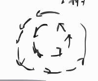
涡旋状力场示意图，箭头沿闭合曲线环绕
第 25 页
$\oint_{P} \vec{A} \cdot d\vec{r} = \iint_{S} (\vec{\nabla} \times \vec{A}) \cdot d\vec{S}$
闭合路径积分 面积分
例
设力 $\vec{F}$ 为
\[
\begin{cases}
F_x = x + 2y + z + 5 \\
F_y = 2x + y + z \\
F_z = x + y + z - 6
\end{cases}
\]
求此质点沿螺旋线
\[
\begin{cases}
x = \cos\theta \\
y = \sin\theta \\
z = 7\theta
\end{cases}
\]
自 $\theta=0$ 到 $\theta=2\pi$ 时，力对质点做的功。
解
判断力是否为保守力：
\[
\vec{\nabla} \times \vec{F} = \left( \frac{\partial F_z}{\partial y} - \frac{\partial F_y}{\partial z} \right) \vec{i} + \left( \frac{\partial F_x}{\partial z} - \frac{\partial F_z}{\partial x} \right) \vec{j} + \left( \frac{\partial F_y}{\partial x} - \frac{\partial F_x}{\partial y} \right) \vec{k}
\]
\[
= (1 - 1)\vec{i} + (1 - 1)\vec{j} + (2 - 2)\vec{k} = \vec{0}
\]
故该力是保守力。
功的微元：
\[
dW = \vec{F} \cdot d\vec{r} = (x + 2y + z + 5)dx + (2x + y + z)dy + (x + y + z - 6)dz
\]
\[
= d\left( \frac{x^2}{2} + \frac{y^2}{2} + \frac{z^2}{2} + 2xy + xz + yz + 5x - 6z \right) = -dV
\]
\[
W = -\left( V(\theta=2\pi) - V(\theta=0) \right) = 98\pi^2 - 70\pi
\]
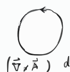
带箭头的圆形示意图
第 26 页
1.8 质点动力学基本定理与基本守恒定律
(1)
\[
\int \vec{F} \, dt = \int \frac{d (m \vec{v})}{dt} dt = \int d (m \vec{v}) = \int d \vec{p}
\]
动量定理。
\[
\vec{I} = \int dt \, \vec{F}, \quad \vec{p} - \vec{p}_0 = \vec{I}
\]
\[
\vec{F} = m \vec{a} = \frac{d (m \vec{v})}{dt}
\]
当\(\vec{I} = 0\)时，\(\vec{p} = m \vec{v} = \vec{C}\)，动量守恒，微观+宏观均成立（多个质点也成立）。
(2)
\[
\vec{r} \times \vec{F} = \vec{r} \times \frac{d (m \dot{\vec{r}})}{dt} = \frac{d}{dt} \left( \vec{r} \times m \dot{\vec{r}} \right) - \frac{d \vec{r}}{dt} \times m \dot{\vec{r}} = \frac{d}{dt} \left( m \vec{r} \times \dot{\vec{r}} \right)
\]
定义力矩\(\vec{M} = \vec{r} \times \vec{F}\)，
\[
\vec{r} \times \vec{F} = \vec{M} = r F \sin\varphi \, \vec{k} = F d \vec{E}
\]
力偶，两个平行力\(\vec{F}_1 = -\vec{F}_2\)，作用在\(\vec{r}_1\)和\(\vec{r}_2\)两点，
\[
\vec{M} = \vec{r}_1 \times \vec{F}_1 + \vec{r}_2 \times \vec{F}_2 = (\vec{r}_1 - \vec{r}_2) \times \vec{F}_1 = \vec{r}_{12} \times \vec{F}_1
\]
与坐标原点无关。
定义质点角动量\(\vec{J} = \vec{r} \times \vec{p} = \vec{r} \times m \dot{\vec{r}}\)，
\[
\vec{M} = \frac{d \vec{J}}{dt}
\]
\[
\vec{J} = m (y \dot{z} - z \dot{y}) \vec{i} + m (z \dot{x} - x \dot{z}) \vec{j} + m (x \dot{y} - y \dot{x}) \vec{k}
\]
合力矩等于角动量对时间的变化率。
(3)
？诺特定理
\[
dW = d\left( \frac{1}{2} m v^2 \right)
\]
若\(dW = -dV\)，则
\[
\frac{1}{2} m v_0^2 + V(\vec{r}_0) = \frac{1}{2} m v^2 + V(\vec{r})
\]
\[
d\left( V + \frac{1}{2} m v^2 \right) = 0
\]
表示力矩相关的矢量示意图，包含原点O、位置矢量r、力矢量F及平行四边形
第 27 页
例
质点所受力通过某一个定点，则质点必在一平面上运动。
解
设力心为坐标原点，$\vec{F} \parallel \vec{r}$，则 $\vec{r} \times \vec{F} = \vec{0}$，
\[
\begin{cases}
m(y\dot{z} - z\dot{y}) = C_1 \\
m(z\dot{x} - x\dot{z}) = C_2 \\
m(x\dot{y} - y\dot{x}) = C_3
\end{cases}
\]
且 $x C_1 + y C_2 + z C_3 = 0$，故质点运动在此平面内。
或 在 $t_0$ 时，$\vec{r}$ 和 $\vec{v}$ 构成平面 $P$。
因 $\vec{J} = \vec{C}$，即 $\vec{r} \times \vec{v} = \vec{C}$，在任意时刻 $\vec{r} \perp \vec{C}$，此即运动平面。
例
轻杆连接重锤，固定 $O$ 点，在竖直平面内运动，$\theta = \theta_0$ 时自由落下，求最低点的速度。
解
(1) 机械能守恒：
\[
0 - mg l \cos\theta_0 = \frac{1}{2}mv^2 - mg l \cos\theta
\]
得 $v^2 = 2gl(\cos\theta - \cos\theta_0)$，当 $\cos\theta = 1$ 时为最低点。
(2) 极坐标，$v = l\dot{\theta}$，切向速度：
\[
m\dot{v} = mg \sin\theta = -ml\ddot{\theta}
\]
\[
\frac{d\dot{\theta}}{dt} = \frac{d\dot{\theta}}{d\theta} \cdot \frac{d\theta}{dt} = \frac{d\dot{\theta}}{d\theta} \dot{\theta} = -\frac{g}{l} \sin\theta
\]
\[
d\dot{\theta}^2 = \frac{g}{l} d\cos\theta
\]
即 $v^2 = l^2 \dot{\theta}^2$，故 $d\left( \frac{v^2}{2} - g l \cos\theta \right) = 0$。
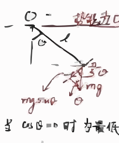
轻杆连接重锤的竖直平面运动受力示意图，标注了O点、杆长l、角度$\theta$、重力mg及其分力mgsin$\theta$
第 28 页
$v^2 = 2 g l (-\cos\theta_0 + \cos\theta) = l^2 \dot{\theta}^2$
摆动周期
$\dot{\theta} = \frac{d\theta}{dt} = \sqrt{\frac{2g}{l} (\cos\theta - \cos\theta_0)}$
\[ T = \int dt = 4 \int_0^{\theta_{\text{max}}} \frac{d\theta}{\dot{\theta}} = \sqrt{\frac{8l}{g}} \int_0^{\theta_0} \frac{d\theta}{\sqrt{\cos\theta - \cos\theta_0}} \]
当 $\theta \sim 0$ 时，$\cos\theta = 1 - \frac{\theta^2}{2} + \cdots$
\[ \sqrt{\cos\theta - \cos\theta_0} = \sqrt{\frac{\theta_0^2}{2} - \frac{\theta^2}{2}} \]
\[ \sqrt{2} \int_0^{\theta_0} \frac{d\theta}{\sqrt{\theta_0^2 - \theta^2}} = \theta_0 \sqrt{2} \int_0^1 \frac{dx}{\sqrt{1 - x^2}} = \theta_0 \times \frac{\pi \sqrt{2}}{2} \]
得 $T = 2\pi \sqrt{\frac{l}{g}}$
第 29 页
课堂 测验
1
假定一个力学系统，在一惯性系中机械能守恒，在任一惯性系中，机械能是否守恒。
2
在一参考系中，角动量守恒，在另一参考系中，角动量是否守恒。
第 30 页
1.9 有心力
1. 有心力的基本性质
定义：如果运动质点所受的力的作用线始终通过某一定点，这个质点所受的力是有心力，力的大小只跟距离相关，而这个定点则叫做力心。力趋向定点的是引力，离开定点的是斥力。
有心力作用下，质点始终在一平面内运动。
因 $\vec{r}$ 与 $\vec{F}$ 共线，$\vec{r} \times \vec{F} = 0$，则有角动量守恒。
力可表示为 $\vec{F} = F(r) \frac{\vec{r}}{r}$。
极坐标下，力心为原点：
\[
\begin{cases}
m(\ddot{r} - r \dot{\theta}^2) = F_r = F(r) \\
m(r \ddot{\theta} + 2 \dot{r} \dot{\theta}) = m \frac{1}{r} \frac{d(r^2 \dot{\theta})}{dt} = F_\theta = 0
\end{cases}
\]
即 $r^2 \dot{\theta} = C$。
有心力为保守力，即：
\[
\vec{F}(r) = -\vec{\nabla} V(r), \quad \int_{r_1}^{r_2} \vec{F}(r) \cdot d\vec{r} = -\left(V(r_2) - V(r_1)\right)
\]
即有
\[
\begin{cases}
\frac{1}{2}m(\dot{r}^2 + r^2 \dot{\theta}^2) + V(r) = E \quad \text{为守恒量} \\
m r^2 \dot{\theta} = L \quad \text{为守恒量}
\end{cases}
\]
$\dot{\theta} = \frac{L}{m r^2}$，代入机械能守恒表达式：
\[
\frac{1}{2}m \dot{r}^2 + \left( \frac{L^2}{2 m r^2} + V(r) \right) = E
\]
只是$r$的函数，此即可看作为有效势能。
第 31 页
可解出
\[ dr = \sqrt{\frac{2}{m}\left(E - V - \frac{L^2}{2mr^2}\right)} dt \]
\[ t = \int_{r_0}^r \frac{dt}{} = \int_{r_0}^r \frac{dr}{(dr/dt)} = \int_{r_0}^r \frac{dr}{\sqrt{\frac{2}{m}\left(E - V - \frac{L^2}{2m}\right)}} \]
\[ d\theta = \frac{L}{mr^2} dt \implies \theta = L \int_0^t \frac{dt}{m r^2(t)} + \theta_0 \]
可解出 $r(t)$ 和 $\theta(t)$。
机械能守恒
\[ \frac{1}{2}m \dot{r}^2 + \frac{L^2}{2mr^2} + V(r) = E = \frac{1}{2}m \dot{r}^2 + V_{\text{eff}}(r) \]
\[ V_{\text{eff}}(r) = \frac{L^2}{2mr^2} + V(r) \]
\[ F_{\text{eff}} = \frac{dV_{\text{eff}}}{dr} = \frac{L}{mr^3} - V'(r) \implies m \ddot{r} = F_{\text{eff}} \]
(1) $r$ 不变，$\dot{r}=0$，圆周运动
(2) $r$ 只能在 $r_1, r_2$ 之间运动
(3) $r$ 只能在 $r_0 - \infty$ 之间，通常不做周期运动
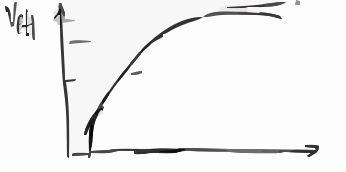
单调上升的有效势能Veff随径向距离r变化的曲线图
第 32 页
测验
质点在势场 $V(r) = -V_0 e^{-\lambda^2 r^2}$ 中运动。
a)
给定角动量 $L$，在什么时候能够存在稳定的圆形轨道。
b)
试证明若 $L$ 足够大，则不存在圆形轨道，计算存在圆形轨道所允许的最大角动量。
纵轴为 $V_{\text{eff}}$，有效势能公式为
\[
V_{\text{eff}} = \frac{L^2}{r^2} - e^{-r^2}
\]
对应角动量 $L=1$、$L=1/2$、$L=1/4$。
右下角标记 $24$。
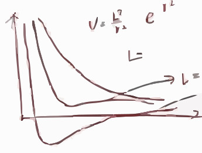
不同角动量L（1、1/2、1/4）对应的有效势能Veff随径向坐标r变化的曲线图
第 33 页
2. 轨道方程 — 比耐公式 交互演示
动力学方程
\[
\begin{cases}
m (\ddot{r} - r \dot{\theta}^2) = F(r) \\
m \frac{1}{r} \frac{d(r^2 \dot{\theta})}{dt} = 0
\end{cases}
\]
令 $u = \frac{1}{r}$，$\dot{\theta} = h u^2$
\[
\dot{r} = \frac{dr}{dt} = \frac{dr}{d\theta} \frac{d\theta}{dt} = \frac{d \frac{1}{u}}{d\theta} \dot{\theta} = -\frac{\dot{\theta}}{u^2} \frac{du}{d\theta} = - h \frac{du}{d\theta}
\]
\[
\ddot{r} = \frac{d\dot{r}}{dt} = \frac{d}{dt} \left( - h \frac{du}{d\theta} \right) = \frac{d}{d\theta} \left( - h \frac{du}{d\theta} \right) \dot{\theta} = - h^2 u^2 \frac{d^2 u}{d\theta^2}
\]
\[
h^2 u^2 \left( \frac{d^2 u}{d\theta^2} + u \right) = - \frac{F}{m}
\]
叫做比耐公式。
Pierre-Simon Laplace 179~1825 文章中
Binet 1841 re-derived with clear and elegant way
第 34 页
3. 平方反比引力
$F = -\frac{GMm}{r^2} = -\frac{k^2 m}{r^2} = -m k^2 u^2$
代入比耐公式：
\[
h^2 u^2 \left( \frac{d^2 u}{d\theta^2} + u \right) = -\frac{F}{m} \implies \frac{d^2 u}{d\theta^2} + u = \frac{k^2}{h^2}
\]
解得
\[
u = C_1 \sin\theta + C_2 \cos\theta + \frac{k^2}{h^2} = C \cos(\theta - \theta_0) + \frac{k^2}{h^2}
\]
即
\[
r = \frac{1}{u} = \frac{h^2/k^2}{1 + C \cos(\theta - \theta_0) \cdot h^2/k^2}
\]
此为圆锥曲线。
代入机械能守恒：
\[
\frac{1}{2} m (\dot{r}^2 + r^2 \dot{\theta}^2) + V(r) = E = \frac{1}{2} m \left( \frac{h^2}{r^4} \left( \frac{dr}{d\theta} \right)^2 + \frac{h^2}{r^2} - \frac{2 k^2}{r} \right) = E
\]
可得
\[
r = \frac{h^2/k^2}{1 + \sqrt{1 + \frac{2 h^2 E}{m k^4}} \cos(\theta - \theta_0)} = \frac{p}{1 + e \cos\theta}
\]
当 $E = -\frac{m k^4}{2 h^2}$ 时，$e = 0$，圆；
当 $E < 0$ 时，$e < 1$，椭圆；
当 $E = 0$ 时，$e = 1$，轨道为抛物线；
当 $E > 0$ 时，$e > 1$，双曲线。
第 35 页
4. 开普勒定律
Tycho Brahe 1546--1601 Johannes Kepler 1571--1630 Galileo Galilei 1564--1642 Isaac Newton 1643--1727
开普勒利用第谷·布拉赫的观测资料，总结出了三条行星运动的规律。
- 行星绕太阳作椭圆运动，太阳位于椭圆的一个焦点上
- 行星和太阳之间的连线，在相等时间内所扫过的面积相等
- 行星公转的周期的平方和轨道半长轴的立方成正比
开普勒第一定律：
\[
r = \frac{p}{1 + e\cos\theta}
\]
$x$轴上两个边界 $\theta=0$ 和 $\theta=\pi$，对应的
\[
r = \frac{p}{1+e}, \quad r = \frac{p}{1-e}
\]
椭圆的直角坐标方程为
\[
\frac{x^2}{a^2} + \frac{y^2}{b^2} = 1
\]
半长轴 $2a = \frac{p}{1+e} + \frac{p}{1-e} = \frac{2p}{1-e^2}$，即
\[
a = \frac{p}{1-e^2}
\]
在 $r = \frac{p}{1 + e\cos\theta}$ 的坐标坐标系中，当
\[
r\cos\theta = -\left(\frac{p}{1-e} - \frac{p}{1-e^2}\right) = -\frac{ep}{1-e^2}
\]
时，
\[
b^2 = (p - r\cos\theta)^2 - (r\sin\theta)^2 = \frac{p^2}{1-e^2}
\]
即半短轴
\[
b = \frac{p}{\sqrt{1-e^2}}
\]
第 36 页
带入比耐公式
\[
F = - m h^2 u^2 \left( \frac{d^2 u}{d \theta^2} + u \right) = - \frac{h^2 m'}{p r^2}
\]
$m$是常数，$\frac{h^2}{p}$与什么有关
开普勒第二定律
\[
\frac{dA}{dt} = \frac{1}{2} \frac{d (r^2 \theta)}{dt} = \frac{h}{2}
\]
可得周期为 $\tau = \frac{2\pi a b}{h}$，又 $dA = \frac{1}{2} r^2 d\theta$，故
\[
\frac{dA}{dt} = \frac{1}{2} r^2 \dot{\theta} = \frac{h}{2}
\]
开普勒第三定律
\[
\frac{\tau^2}{a^3} = \frac{4\pi^2 a^2 b^2}{a^3} = \frac{4\pi^2 p}{h^2}
\]
为常数，与行星无关。
5. 圆形轨道的稳定性 交互演示
对于圆形轨道，$\frac{du}{d\theta} = 0$，代入得
\[
h^2 u^2 \left( \frac{d^2 u}{d \theta^2} + u \right) = - \frac{F}{m}
\]
可得
\[
h^2 = - \frac{F}{m u^3} = \frac{P(u)}{u^3}
\]
又 $h^2 = r^4 \dot{\theta}^2 = r^2 v^2 = v^2 / u^2$，即
\[
v = \sqrt{\frac{P(u)}{u}}
\]
$P = - \frac{F}{m}$
即只要在 $r$ 处垂直于 $\vec{r}$ 的抛射速度 $v > \sqrt{\frac{P(u)}{u}}$，可做圆周运动。
稳定定义：当质点受到微小扰动而偏离原来轨道后，如果还保持在原来轨道近邻，那么原来的轨道是稳定的；反之就是不稳定的。
28
第 37 页
比耐公式
\[ h^2 u^2 \left( \frac{d^2 u}{d\theta^2} + u \right) = P(u) \]
\[ p = -\frac{F}{m} \]
引入扰动 \( u = u_0 + \xi \)，其中 \( u_0 \) 为圆形轨道（原轨道），\( \xi \ll u \) 为小量。
\[ \frac{d^2 u}{d\theta^2} = \frac{d^2 \xi}{d\theta^2} \]
比耐公式：
\[ h^2 u^2 \frac{d^2 \xi}{d\theta^2} + h^2 u^3 = P(u) \]
\[ P(u) = P(u_0) + \xi P'(u_0) + \mathcal{O}(\xi^2) \]
\[ h^2 u^3 = h^2 (u_0 + \xi)^3 = h^2 u_0^3 + 3 h^2 u_0^2 \xi + \mathcal{O}(\xi^2) \]
代入比耐公式得：
\[ h^2 u_0^2 \frac{d^2 \xi}{d\theta^2} + h^2 u_0^3 + 3 h^2 u_0^2 \xi = P(u_0) + \xi P'(u_0) \]
原来轨道方程：
\[ h^2 u_0^3 = P(u_0) \]
代入整理：
\[ \frac{P(u_0)}{u_0} \left( \frac{d^2 \xi}{d\theta^2} + 3 \xi \right) = \xi P'(u_0) \]
\[ \frac{d^2 \xi}{d\theta^2} + \xi \left( 3 - \frac{u_0 P'(u_0)}{P(u_0)} \right) = 0 \]
解为：
\[ \xi = A e^{\theta \sqrt{\frac{u_0 P'(u_0)}{P(u_0)} - 3}} + B e^{-\theta \sqrt{\frac{u_0 P'(u_0)}{P(u_0)} - 3}} \]
当 \( \frac{u_0 P'(u_0)}{P(u_0)} - 3 > 0 \) 时，$\xi$随$\theta$指数放大，发散；
当 \( \frac{u_0 P'(u_0)}{P(u_0)} - 3 = 0 \) 时，\( \xi = A\theta + B \)，随$\theta$线性变大，发散；
当 \( \frac{u_0 P'(u_0)}{P(u_0)} - 3 < 0 \) 时，为振荡函数；
当 \( F = -\frac{k^2 m}{r^k} \) 时，\( \frac{u_0 P'(u_0)}{P(u_0)} = k \)，稳定性要求 \(3-k>0\)，即 k<3。
\hfill (29)
第 38 页
拉普拉斯-龙格-楞次矢量.
$\vec{A} = \vec{p} \times \vec{L} - mk\vec{e}_r$ 沿椭圆长轴 指向近日点.
\[
\frac{d\vec{A}}{dt} = \frac{d}{dt} \left( \vec{p} \times \vec{L} \right) - mk \frac{d\vec{e}_r}{dt}
\]
\[
= \left( \frac{d}{dt}\vec{p} \right) \times \vec{L} + \vec{p} \times \frac{d\vec{L}}{dt} - mk \frac{d\vec{e}_r}{dt}
\]
其中 $\frac{d\vec{L}}{dt} = 0$.
\[
\frac{d\vec{p}}{dt} \times \vec{L} = \left( -\frac{k}{r^3} \vec{r} \right) \times \left( m (\vec{r} \times \dot{\vec{r}}) \right)
\]
\[
= -\frac{mk}{r^3} \left( \vec{r} \times (\vec{r} \times \dot{\vec{r}}) \right)
\]
向量三重积公式：$\vec{a} \times (\vec{b} \times \vec{c}) = \vec{b} (\vec{a} \cdot \vec{c}) - \vec{c} (\vec{a} \cdot \vec{b})$，因此
\[
\vec{r} \times (\vec{r} \times \dot{\vec{r}}) = \vec{r} (\vec{r} \cdot \dot{\vec{r}}) - \dot{\vec{r}} r^2
\]
又 $\vec{r} \cdot \dot{\vec{r}} = r \dot{r}$.
代入得：
\[
\frac{d\vec{p}}{dt} \times \vec{L} = -\frac{mk}{r^3} \left( \vec{r} (\vec{r} \cdot \dot{\vec{r}}) - r^2 \dot{\vec{r}} \right) = mk \left( \frac{\dot{\vec{r}}}{r} - \frac{\dot{r} \vec{r}}{r^2} \right)
\]
\[
\frac{d\vec{e}_r}{dt} = \frac{d}{dt} \left( \frac{\vec{r}}{r} \right) = \frac{r \dot{\vec{r}} - \dot{r} \vec{r}}{r^2}
\]
\[
\frac{d\vec{A}}{dt} = mk \left( \frac{\dot{\vec{r}}}{r} - \frac{\dot{r} \vec{r}}{r^2} \right) - mk \left( \frac{\dot{\vec{r}}}{r} - \frac{\dot{r} \vec{r}}{r^2} \right) = 0
\]
(1) $\vec{A} \cdot \vec{r} = A r \cos\theta = L^2 - mk r$，则
\[
r = \frac{L^2/(mk)}{1 + \frac{4}{mk} \cos\theta}
\]
圆锥曲线方程.
(2) 对称性：平方反比力，$SO(3)$对称性→ 角守恒，有$SO(4)$对称性.
(3) 泡利1926年 用RL算符与角动量算符对易 计算氢原子能级.
(4) 分析进动 5相.
(29) - 2
第 39 页
1.9.6 $\alpha$粒子散射
$\alpha$粒子（氦-4）打在金箔，$\alpha$粒子含2质子+2中子，金核含79质子+118中子。
以金核为中心，力为
\[ F = \frac{1}{4\pi\varepsilon_0} \frac{2Ze^2}{r^2} = \frac{k'}{r^2} \]
势能
\[ V = \frac{k'}{r} \]
机械能
\[ \frac{1}{2}mv^2 + \frac{k'}{r} = \frac{1}{2}m(\dot{r}^2 + r^2\dot{\theta}^2) + \frac{k'}{r} = E \]
E恒大于零，轨道方程
\[ r = \frac{h^2/k^2}{1 + \sqrt{1 + 2h^2E/mk^4} \cos\theta} \]
偏心率 $e > 0$，轨道为双曲线，$\varphi$ 为偏转角。
初始条件：$\theta = \pi$，$r \to \infty$，$r\sin(\pi - \theta) = r\sin\theta = \rho$ 为截距。
角动量：$mv_0\rho$，$h = v_0\rho$ 为常量。
比耐公式：
\[ h^2u^2\left(\frac{d^2u}{d\theta^2} + u\right) = -\frac{k'}{m}u^2 \]
化简得
\[ \frac{d^2u}{d\theta^2} + u + \frac{k'}{mh^2} = 0 \]
解为
\[ u = A\cos\theta + B\sin\theta - \frac{k'}{mh^2} \]
1.9.6.1
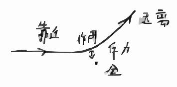
$\alpha$粒子靠近金核受斥力作用偏转远离的示意图
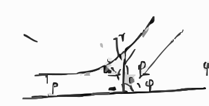
$\alpha$粒子散射轨迹示意图，标注偏转角$\phi$和瞄准距离$\rho$
第 40 页
边界条件：$\theta \to \pi$，$u = \frac{1}{r} = 0$
\[
-A - \frac{k'}{m h^2} = 0 \implies A = -\frac{k'}{m h^2}
\]
$\theta \to \pi$，$\frac{u}{\sin\theta} = \rho \implies B = \frac{1}{\rho}$
\[
\frac{1}{r} = -\frac{k'}{m h^2}(1+\cos\theta) + \frac{1}{\rho}\sin\theta
\]
当 $r \to \infty$ 时，
\[
\begin{cases}
(1) & \theta = \pi \\
(2) & -\frac{k'}{m h^2}(1+\cos\phi) + \frac{1}{\rho}\sin\phi = 0
\end{cases}
\]
\[
\rho = \frac{k'}{m v_\infty} \cot \frac{\phi}{2}
\]
$\rho$ 越大，偏转角越小。
散射截面：定义 $n$ 为入射粒子束单位时间内通过粒子单位截面积的粒子数目。
$dN$：单位时间内在 $\phi \sim \phi + d\phi$ 内散射的粒子数。
\[
d\sigma = \frac{dN}{n} = \text{假设粒子均匀入射}
\]
\[
d\sigma = 2\pi \rho d\rho = -2\pi \rho \frac{d\rho}{d\phi} d\phi, \quad dN = n \times 2\pi \rho d\rho
\]
由 $\rho = \frac{k'}{m v_\infty} \cot \frac{\phi}{2}$，代入得：
\[
d\sigma = -2\pi \frac{k'}{m v_\infty} \cot \frac{\phi}{2} \cdot \frac{k'}{m v_\infty} \cdot \left( -\frac{1}{2} \frac{1}{\sin^2 \frac{\phi}{2}} \right) d\phi
\]
\[
= \frac{1}{4} \left( \frac{k'}{m v_\infty} \right)^2 \frac{2\pi \sin\phi}{\sin^4 \frac{\phi}{2}} d\phi
\]
1.9.6.2 (31)
第 41 页
散射截面在小$\phi$角处是发散的
1912--1917年卢瑟福散射实验
$\alpha$粒子质量：$m = 6.644 \times 10^{-27}\ \text{kg}$
$\alpha$粒子电荷：$q = 2 \times 1.6 \times 10^{-19}\ \text{C}$
金核电荷：$Q = 79 \times 1.6 \times 10^{-19}\ \text{C}$
$\alpha$粒子速度：$v = 2 \times 10^7\ \text{m/s}$
真空介电常数：$\dfrac{1}{4\pi\varepsilon_0} = 9 \times 10^9\ \text{N·m}^2\text{C}^{-2}$
若 \[ \frac{1}{2}mv^2 = \frac{1}{4\pi\varepsilon_0} \frac{qQ}{r_0} \]
动能完全转化为势能
得 \[ r_0 = \frac{1}{4\pi\varepsilon_0} \frac{2qQ}{mv^2} \approx 2.7 \times 10^{-14}\ \text{m} \]
1.9.6,3 (32)
散射截面随散射角变化的曲线图
第 42 页
有心力，散射截面示例
例1
求质点在半径为$a$的刚性球上散射的有效截面。（即当$r<a$时 $U=\infty$，当$r>a$时 $U=0$）
解：
图示，两条直线（入射，出射）与撞击点的半径对称，
\[
\rho = a \sin\varphi = a \sin\frac{\pi-\theta}{2} = a \cos\frac{\theta}{2}, \quad \theta = \pi - 2\varphi
\]
其中 $0<\varphi<\frac{\pi}{2}$，$0<\theta<\pi$。
散射截面定义：
\[
d\sigma = 2\pi \rho d\rho = \frac{1}{2} \cdot 2\pi a^2 \cos\frac{\theta}{2} \sin\frac{\theta}{2} d\theta = \frac{1}{2} \pi a^2 \sin\theta d\theta
\]
对角度积分，得
\[
\sigma = \pi a^2
\]
第 43 页
1.
质点在势能 $V(x) = - c x^n e^{- a x}$ 下运动，求平衡点附近的小振动频率。
解：平衡点可由下式解出：
\[
0 = \frac{dV}{dx} = - c x^{n-1} e^{- a x} (n - a x)
\]
即 $x = \frac{n}{a}$ 处。
势能在 $x = x_0 + y$ 处展开，二阶导数为：
\[
V''(x) = - c x^{n-2} e^{- a x} \left( (n-1 - a x)(n - a x) - a x \right)
\]
代入 $x = x_0 = \frac{n}{a}$，得：
\[
= - c \left( \frac{n}{a} \right)^{n-2} e^{-n} \cdot (-n)
\]
因此小振动的势能近似为：
\[
V(y) = \frac{1}{2} V''(x_0) y^2
\]
运动方程为：
\[
m \frac{d^2 y}{dt^2} = - \frac{c n^{n-1} e^{-n}}{a^{n-2}} \cdot y
\]
振动频率 $\omega$ 满足：
\[
\omega = \sqrt{ \frac{V''(x_0)}{m} } = \sqrt{ \frac{c e^{-n} n^{n-1}}{m a^{n-2}} }
\]
2.
有心力场中角动量守恒：
\[
\vec{L} = \vec{r} \times m \vec{v} = \vec{r} \times m \dot{\vec{r}}
\]
\[
\frac{d \vec{L}}{dt} = \frac{d \vec{r}}{dt} \times m \dot{\vec{r}} + \vec{r} \times \frac{d (m \dot{\vec{r}})}{dt} = m \dot{\vec{r}} \times \dot{\vec{r}} + \vec{r} \times \vec{f}(r)
\]
\[
= 0
\]
第 44 页
有效势练习题
质点在势场 $V(r) = - V_0 e^{-\lambda^2 r^2}$ 中运动。
(a)
给定角动量 $L$，在什么时候存在圆形轨道？
(b)
若 $L$ 足够大，则不存在圆形轨道，求圆形轨道允许的最大值。
解：中心力场中有效势为
\[
V_{\text{eff}}(r) = \frac{L^2}{2 m r^2} - V_0 e^{-\lambda^2 r^2}
\]
圆形轨道存在的条件为
\[
V'_{\text{eff}}(r) = -\frac{L^2}{m r^3} + 2 V_0 \lambda^2 e^{-\lambda^2 r^2} r = 0
\]
得
\[
L^2 = 2 m V_0 \lambda^2 r^4 e^{-\lambda^2 r^2}
\]
只要 $L$ 不太大，$V_{\text{eff}}$ 为，可以存在圆形轨道。
(b)
\[
\frac{d L^2}{d r} = 8 m V_0 \lambda^2 r^3 e^{-\lambda^2 r^2} - 4 m V_0 \lambda^4 r^5 e^{-\lambda^2 r^2} = 4 m V_0 \lambda^2 r^3 e^{-\lambda^2 r^2} (2 - \lambda^2 r^2)
\]
当 $r^2 = \frac{2}{\lambda^2} = r_0^2$ 时，$L$ 最大，
\[
L^2_{\text{max}} = \frac{8 m V_0}{\lambda^2 e^2}
\]
第 45 页
有心力 有效势能 交互演示
例
给定角动量$L$，求解势能函数$V(r)$，使得质点的运行轨迹为螺旋曲线 $r = r_0 e^{a\theta}$，设能量$E=0$。
解:
$\dot{r} = \frac{dr}{d\theta} \frac{d\theta}{dt} = a r \dot{\theta} = a r \cdot \frac{L}{m r^2}$
\[
E = \frac{1}{2} m \dot{r}^2 + \frac{L^2}{2 m r^2} + V(r) = 0
\]
代入$\dot{r}^2 = \frac{a^2 L^2}{m^2 r^2}$，得：
\[
E = \frac{1}{2} m \cdot \frac{a^2 L^2}{m^2 r^2} + \frac{L^2}{2 m r^2} + V(r) = \frac{a^2 L^2}{2 m r^2} + \frac{L^2}{2 m r^2} + V(r) = 0
\]
解得：
\[
V(r) = - \frac{(1+a^2) L^2}{2 m r^2}
\]
例
斥力，同号两个电荷，求其轨道方程，势能$V = \frac{k^2}{r}$。
解:
比耐公式：
\[
h^2 u^2 \left( \frac{d^2 u}{d\theta^2} + u \right) = - \frac{F}{m}
\]
其中$u = 1/r$。力为：
\[
F = - \frac{dV}{dr} = \frac{k^2}{r^2}
\]
力沿径矢方向，远离力心。代入比耐公式：
\[
h^2 u^2 \left( \frac{d^2 u}{d\theta^2} + u \right) = - \frac{k^2}{m r^2} = - \frac{k^2 u^2}{m}
\]
两边除以$u^2$（$u \neq 0$），得：
\[
\frac{d^2 u}{d\theta^2} + u = - \frac{k^2}{m h^2}
\]
解得：
\[
u = - \frac{k^2}{m h^2} + A \cos(\theta - \theta_0)
\]
轨道方程：
\[
r = \frac{1}{u} = \frac{p}{A p \cos(\theta-\theta_0)-1}, \qquad p=\frac{m h^2}{k^2}
\]
又$\dot{r} = \frac{dr}{dt} = \frac{dr}{d\theta} \cdot \frac{d\theta}{dt} = \frac{h}{r^2} \frac{dr}{d\theta}$，且能量方程：
\[
\frac{1}{2} m \left( \frac{h^2}{r^4} \left( \frac{dr}{d\theta} \right)^2 + \frac{h^2}{r^2} \right) + \frac{k^2}{r} = E
\]
第 46 页
解得轨道方程
\[
r = \frac{-h^2/(k^2 m)}{1 + \sqrt{1 + \frac{2h^2 E}{k^4 m^3}} \cos(\theta - \theta_0)}
\]
\[
e = 1 + \frac{2h^2 E}{k^4 m^3}
\]
\[
E = \frac{1}{2} m \dot{r}^2 + \frac{L^2}{2 m r^2} + \frac{k^2}{r} > 0
\]
曲线为双曲线。
例 质点在势能 $V(r)=\beta r^2$，证时 质点轨道为椭圆
解 机械能守恒
\[
\frac{1}{2} m \dot{r}^2 + \frac{L^2}{2 m r^2} + \beta r^2 = E
\]
\[
\dot{r} = \frac{dr}{d\theta} \dot{\theta} = \frac{L}{m r^2} \frac{dr}{d\theta}
\]
\[
\left( \frac{1}{r^2} \frac{dr}{d\theta} \right)^2 = \frac{2 m E}{L^2} - \frac{1}{r^2} - \frac{2 m \beta r^2}{L^2}
\]
令 $u = \frac{1}{r}$，$-du = -\frac{1}{r^2} dr$
令 $y = \frac{1}{r^2}$，$dy = -2 \frac{1}{r^3} dr$
\[
\left( \frac{1}{2} \frac{dy}{d\theta} \right)^2 = \frac{2 m E y}{L^2} - y^2 - \frac{2 m \beta}{L^2}
\]
\[
= - \left( y - \frac{m E}{L^2} \right)^2 - \frac{2 m \beta}{L^2} + \left( \frac{m E}{L^2} \right)^2 = \left( \frac{m E}{L} \right)^2 \left( 1 - \frac{2 \beta L^2}{m E^2} \right)
\]
令 $z = y - \frac{m E}{L^2}$
\[
\left( \frac{dz}{d\theta} \right)^2 = -4 z^2 + 4 B^2 \implies z = B \cos\left[ 2(\theta - \theta_0) \right]
\]
第 47 页
$z = \frac{1}{r^2} - \frac{mE}{L^2}$ 选 $\theta_0 = 0$ 作为边界条件
得
\[
\frac{1}{r^2} = z + \frac{mE}{L^2} = \sqrt{\frac{mE}{L^2} \left(1 - \frac{\beta L^2}{mE^2}\right)} \cos 2\theta + \frac{mE}{L^2}
\]
\[
= \frac{mE}{L^2} \left(1 + \sqrt{1 - \frac{2\beta L^2}{mE^2}} \cos 2\theta\right)
\]
\[
\left( r^2 \cos 2\theta = r^2 \left[\cos^2 \theta - \sin^2 \theta\right] = x^2 - y^2 \right)
\]
\[
1 = \frac{mE}{L^2} \left( (1+\varepsilon)x^2 + (1-\varepsilon)y^2 \right)
\]
\[
\frac{x^2}{a^2} + \frac{y^2}{b^2} = 1
\]
\[
a = \sqrt{\frac{L^2/mE}{1+\varepsilon}}, \quad b = \sqrt{\frac{L^2/mE}{1-\varepsilon}}
\]
第 48 页
第一章练习题
(1)
质量为$m$的质点以速度$\vec{v}_1$从一个势能为常数$U_1$的半空间运动到另一个势能为常数$U_2$的半空间，求质点运动方向的通改变。
解：势能分界面上，梯度为0，方向上。质点受力为0，于是有
\[
\left\{
\begin{aligned}
&v_1 \sin\theta_1 = v_2 \sin\theta_2, \\
&\frac{1}{2} m v_1^2 + U_1 = \frac{1}{2} m v_2^2 + U_2
\end{aligned}
\right.
\]
得
\[
\frac{\sin\theta_1}{\sin\theta_2} = \frac{v_2}{v_1} = \sqrt{1 + \frac{2}{m v_1^2} (U_1 - U_2)}
\]
类似与光子折射。
(2)
试求被半径为$a$、深度为$U_0$的球形势阱（当$r>a$时$U=0$，当$r<a$时$U=-U_0$）散射的有效截面。
解：
\[
\frac{\sin\alpha}{\sin\beta} = n, \quad n = \sqrt{1 + \frac{2 U_0}{m v^2}}
\]
偏转角为
\[
\chi = 2(\alpha - \beta)
\]
\[
\left\{
\begin{aligned}
&\frac{\sin\left(\alpha - \frac{\chi}{2}\right)}{\sin\alpha} = \cos\frac{\chi}{2} - \cot\alpha \cdot \sin\frac{\chi}{2} = \frac{1}{n}, \\
&a \sin\alpha = \rho
\end{aligned}
\right.
\]
\[
\cos\frac{\chi}{2} - \frac{\sqrt{1 - \rho^2 / a^2}}{\rho/a} \sin\frac{\chi}{2} = \frac{1}{n}
\]
消去$\alpha$可得
\[
\rho^2 = a^2 \frac{n^2 \sin^2 \frac{\chi}{2}}{n^2 + 1 - 2n \cos\frac{\chi}{2}}
\]
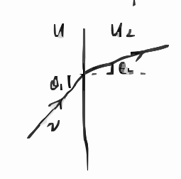
质点在势能分界面的折射示意图，含速度v$_{1}$、角度$\theta$$_{1}$$\theta$$_{2}$、势能U$_{1}$U$_{2}$
第 49 页
$d\sigma = 2\pi \rho \, d\rho$
\[
= \pi d\rho^2
\]
\[
= \frac{a^2 n^2}{4 \cos \frac{\chi}{2}} \cdot \frac{\left(n \cos \frac{\chi}{2} - 1\right)\left(n - \cos \frac{\chi}{2}\right)}{\left(1 + n^2 - 2n \cos \frac{\chi}{2}\right)^2} \cdot 2\pi \sin\chi \, d\chi
\]
\[
= \frac{\pi a^2 n^2}{2} \sin \frac{\chi}{2} \cdot \frac{\left(n \cos \frac{\chi}{2} - 1\right)\left(n - \cos \frac{\chi}{2}\right)}{\left(1 + n^2 - 2n \cos \frac{\chi}{2}\right)^2} d\chi
\]
由于 $0 < \rho < a$ 时存在散取 要求 $0 \leq \cos \frac{\chi}{2} \leq \frac{1}{n}$
\[
\int d\sigma = \int_{\frac{1}{n}} d\cos \frac{\chi}{2} \left( \frac{d\sigma}{d\cos \frac{\chi}{2}} \right) = \pi a^2
\]
本页由手写扫描 OCR 后重排；公式用 MathJax 本地渲染，图为 TikZ/矢量 SVG。原扫描仅作校对底稿，不再作为站点阅读形式。